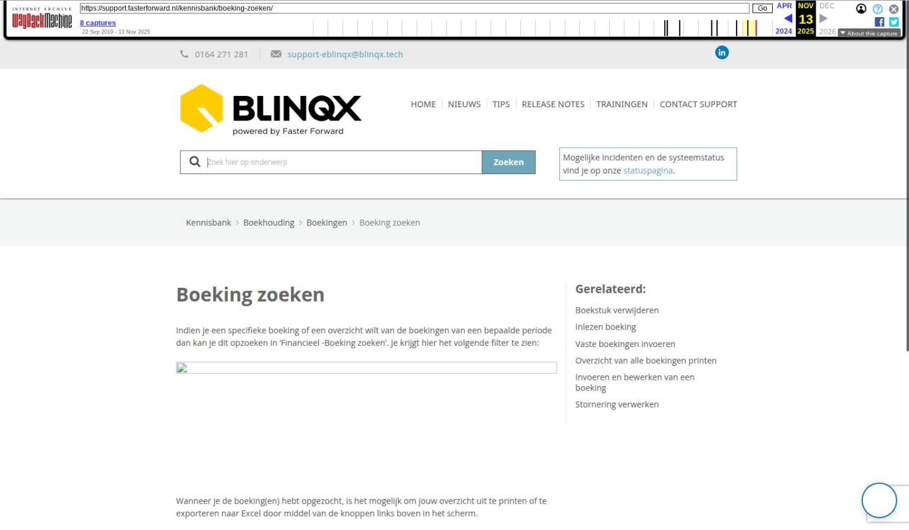

Adviespakketten gekoppeld aan eBlinqx

Tekstinhoud
Adviespakketten gekoppeld aan eBlinqx
Het hypotheekadvies wordt niet in eBlinqx gemaakt, maar in een adviespakket. Daarna kan het advies via HDN of direct verstuurd worden naar eBlinqx om het verder te verwerken in het klantdossier. In principe kan ieder adviespakket via HDN een bericht naar eBlinqx sturen.
Onderstaand de pakketten waarmee eBlinqx een directe koppeling heeft. Het is dan niet nodig om twee HDN certificaten te behouden, alleen een HDN certificaat voor eBlinqx is voldoende.
Wil je gebruik maken van één van deze koppelingen? Stuur dan een e-mail naar support-eblinqx@blinqx.tech voor de inrichting.
Fastlane
Adviesbox en Adviesbox Online
Figlo Hypotheken
DIAS Advies
Findesk
Finix
FinRust
Matchen met bestaand dossier
BSN nummer meesturen
Fastlane
Fastlane is de nieuwste Hypotheekadviessoftware van De Nationale Hypotheekbond.
Met Fastlane Advies bereken je de hypotheek en stuur je deze eenvoudig naar eBlinqx om de aanvraag naar de geldverstrekker te sturen. Daarnaast bereken je snel en eenvoudig de verantwoorde hypotheekhoogte met de daarbij behorende woonlastenverzekeringen. Als output genereert het systeem een adviesrapport, de zogenaamde 'Haalbaarheidscheck'.
ZO GEBRUIK JE FASTLANE
Adviesbox en Adviesbox Online
Deze koppeling werkt in twee richtingen. Als eerste genereer je een HBX bestand van de klantgegevens van eBlinqx. Deze kan je vervolgens uploaden in Adviesbox of Adviesbox Online. Na de adviseringswerkzaamheden stuur je de aanvraag van Adviesbox naar eBlinqx.
De prospect/klant die opgevoerd is in eBlinqx kan naar Adviesbox geëxporteerd worden vanuit het klantdossier middels het tabblad Export – Adviesbox NAW. Indien je gebruikt maakt van Veilig Ophalen of Ockto kies je hier eerst van welke bron je gebruikt wilt maken. Ockto en Veilig Ophalen komt alleen zichtbaar als er een brondata-bestand hiervan beschikbaar is in het dossier.
Maak je geen gebruik van Ockto of Veilig Ophalen dan krijg je direct velden te zien die je moet invullen.
Na het invullen klik je op 'HBX genereren' en vervolgens op 'HBX downloaden' (deze knop wordt zichtbaar na het klikken op genereren). Het HBX bestand kan je uploaden in Adviesbox of Adviesbox Online.
Let op: wanneer de eerste persoon of partner overleden is en zo is aangemerkt in eBlinqx dan verschijnt er een melding dat het niet mogelijk is om het HBX bestand te genereren. Indien de partner is overleden dan dien je deze op 'Geen' te zetten om het bestand wel te kunnen genereren.
In Adviesbox of Adviesbox Online verwerk je de aanvraag. Deze aanvraag kan direct verstuurd worden naar eBlinqx. Vanuit het klantdossier in eBlinqx verstuur je de aanvraag naar de geldverstrekker.
Klik hier voor de volledige handleiding voor Adviesbox. Hier lees je meer over Adviesbox Online.
Inloggegevens
In Adviesbox dienen jouw inloggegevens (gebruikersnaam en wachtwoord) van eBlinqx en de SSO-code en organisatie-ID correct te staan om aanvragen te kunnen exporteren. In eBlinqx kan je de SSO-code en organisatie-ID vinden, indien je de juiste rechten hebt, onder de organisatie Intersoftware. Dit via 'beheer – organisatie en personen – Intersoftware – tabblad inventarisatie'.
Om Adviesbox Online te koppelen met eBlinqx moet de API ingesteld worden. Wil je hier gebruik van maken stuur dan een e-mail naar support-eblinqx@blinqx.tech.
Figlo Hypotheken
Deze koppeling werkt in twee richtingen. Als eerste verstuur je de klantgegevens van eBlinqx naar Figlo en na de adviseringswerkzaamheden weer van Figlo naar eBlinqx.
In de ideale situatie worden de NAW gegevens van eBlinqx naar Figlo verstuurd en komt het advies met HDN of direct terug in eBlinqx.
Let op: Indien je gebruik maakt van Figlo via MijnGeldzaken dien je het HDN bericht handmatig te exporteren en importeren.
DIAS Advies
De koppeling tussen eBlinqx en DIAS Advies werkt in twee richtingen. Vanuit eBlinqx stuur je vanuit het klantdossier – tabblad Export – DIAS Advies de klantgegevens naar DIAS Advies. Dit doe je door te klikken op 'SC1 Downloaden'. Er wordt dan een xml gegenereerd en deze wordt klaargezet in de map Downloads. Vervolgens kun je daar op dubbelklikken. Windows zal nu vragen met welk programma je dit bestand wilt openen. Kies of zoek dan naar DIAS Advies Client en kies ervoor om dit programma altijd te gebruiken voor dit bestandstype.
Als DIAS Advies al geopend is, kun je op het SC1 bestand klikken en worden de gegevens geïmporteerd in een nieuw adviestraject.
In DIAS Advies berekenen je vervolgens verschillende hypotheken en vergelijk je deze met elkaar. Vanuit DIAS stuur je deze gegevens weer terug naar eBlinqx. Het is belangrijk dat je hierbij kiest voor 'Versturen VIA eBlinqx'.
Findesk
Vanuit eBlinqx stuur je het dossier direct naar Findesk. Het dossiernummer uit eBlinqx wordt meegestuurd, zodat bij de export vanuit Findesk naar eBlinqx de gegevens weer direct gekoppeld worden aan het juiste dossier.
Finix
De koppeling met Finix werkt één kant op. Het advies wordt van Finix naar eBlinqx gestuurd.
Wanneer je de aanvraag van Finix naar eBlinqx hebt gestuurd, komt het AX bericht binnen in de HDN inbox op je dashboard in eBlinqx. Vanuit daar kan het bericht verwerkt worden naar dossier, zoals bij de andere adviespakketten. Op dit moment worden alleen AX berichten verstuurd.
FinRust
De koppeling met FinRust werkt eenzijdig. Wanneer in eBlinqx het brondata-bestand van de klant beschikbaar is kan deze eenvoudig worden geïmporteerd in FinRust.
Persoonsgegevens, inkomens, AOW's en pensioeninkomens worden hier direct ingeladen waarna de planningssoftware razendsnel een financiële foto maakt. Deze bespreek je vervolgens direct met de klant. Ook is het mogelijk om de financiële situatie verder uit te diepen doormiddel van het toevoegen van extra gegevens of het inzichtelijk maken van diverse scenario's.
Matchen met bestaand dossier
Wanneer je niet vanuit eBlinqx de klant naar het adviespakket verstuurt, moet er aan een aantal criteria voldaan worden om te matchen met een bestaand dossier in eBlinqx.
De volgende criteria moeten exact overeenkomen:
Achternaam
Geslacht
Geboortedatum
Let op! Bij twee personen in het eBlinqx dossier moeten er ook twee personen vanuit het adviespakket meekomen. Ook de eventuele meisjesnaam indien deze in eBlinqx staat.
BSN nummer meesturen
Vanuit alle adviesapplicaties wordt een BSN met het HDN-bericht meegestuurd. Dit BSN blijft in het bericht aanwezig wanneer je deze doorstuurt naar de maatschappij. In eBlinqx wordt dit veld niet standaard overgenomen, omdat een hypothecair/financieel planner dit volgens de AVG niet mag bewaren. Op verzoek kan de setting 'overnemen uit adviespakket ja/nee' aangezet worden. Hiervoor stuur je een een e-mail met dit verzoek naar support-eblinqx@blinqx.tech.
Indien gewenst is het mogelijk om reeds opgevoerde Burgerservicenummers van bestaande klanten te verwijderen uit eBlinqx. Hiervoor stuur je een opdracht naar support-eblinqx@blinqx.tech.
Laatste update: 15 oktober 2025
Was deze informatie nuttig?
Ja Nee